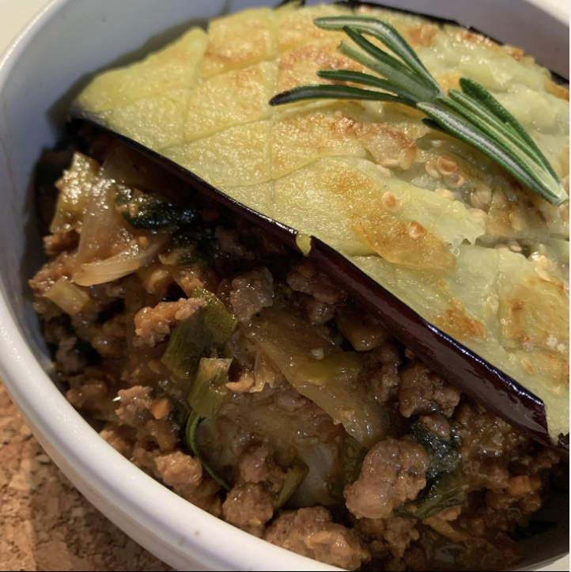

Doenjang Based Beef Rice Bowel with Eggplant

Perfect for people who do not like the texture of eggplants
Ingredients
- Ground Beef
- Asian Eggplant
- Doenjang
- Thyme
- Soy Sauce
- Sesame Oil
Steps
- See video for Steps
- Take a picture and upload on your instagram